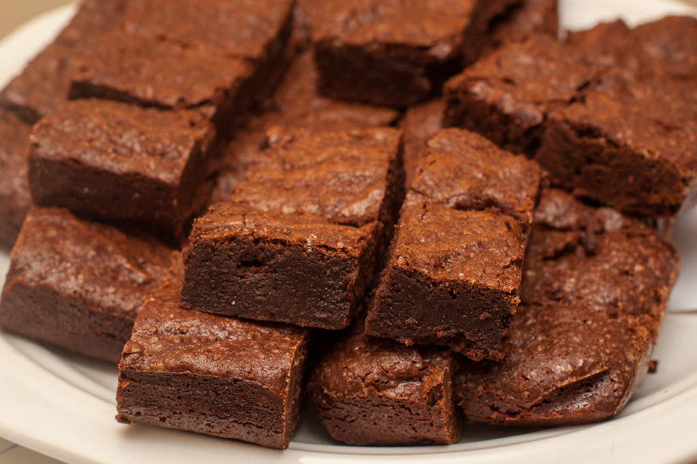

Fudge Brownie Recipe

The following is a recipe for fudge brownies! They are simple to make and way better than boxed brownie mix.
Ingredients
- 120g All-Purpose Flour
- 1/2 Teaspoon Baking Powder
- 1/2 Teaspoon Salt
- 43g Unsweetened Cocoa Powder
- 170g Unsalted Butter
- 28ml Vegetable Oil
- 265g Granulated Sugar
- 2 Large Eggs
- 1 Large Egg Yolk
- 2 Teaspoons Vanilla Extract
- 128g Chocolate Chips
Steps
- Preheat oven to 350 degrees (F) (175 degreed C). Line an 9×9-inch baking pan with parchment paper. Spray lightly with non-stick baking spray and set aside.
- In a large bowl, sift together the flour, baking powder, salt, cocoa powder, and espresso powder. Set aside until needed.
- In a medium saucepan, combine the butter, oil, and 1/3 cup of the sugar. Heat over medium heat, stirring frequently, until butter is completely melted. Remove from heat.
- In a large mixing bowl, combine the eggs, egg yolk, vanilla, and remaining sugar. Whisk until well combined, about 30 seconds.
- Slowly, pour the warm butter mixture into the egg mixture, adding it very gradually and whisking constantly until completely combined.
- Add in the dry ingredients and chocolate chips and, using a rubber spatula, slowly stir until just combined.
- Scrape the batter into the prepared pan and smooth the top.
- Bake for 28 (to 30 minutes) or until the edges are firm and the top is shiny and slightly cracked.
- Place pan on a cooling rack and cool completely before slicing.
Back to Homepage